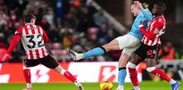

Resumen de la Jornada: Sorpresas en la tabla

Tras una racha de cuatro victorias consecutivas en la Premier League, el Manchester City empató ante un sorprendente Sunderland, que se mantiene séptimo en la clasificación.
La situación de Mbappé y la Supercopa
El francés Mbappé sufre un esguince de rodilla y es baja segura para el duelo contra el Betis. A partir de ahí, que pueda jugar en la Supercopa es una incógnita.